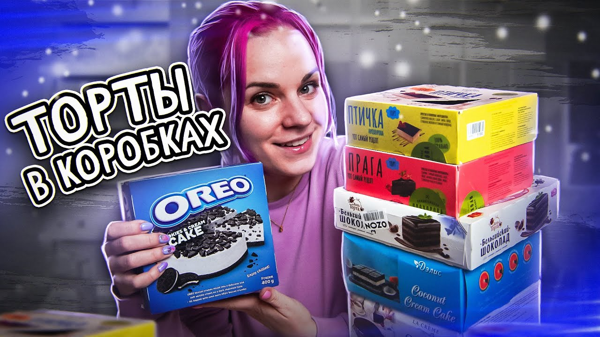

- Настоящее имя: Екатерина Бельчик
- Псевдоним: Катя Бельчик
- Возраст: 28 лет
- Знак зодиака: Стрелец
- Отношения: замужем
- Где родилась: Клин
- Где живет: Москва
Мой путь
Так как Катя обожает готовить и делает это профессионально, то она принимала участие в пятом сезоне телешоу «Кондитер». О себе фудблогер говорит с юмором как о грозе сладкого мира.
Многие пользователи убеждены, что популярность каналу принесли характер и позитивный настрой автора. Именно они сразу обратили на себя внимание. В настоящее время о Кате говорят, как о личности очень интересной.